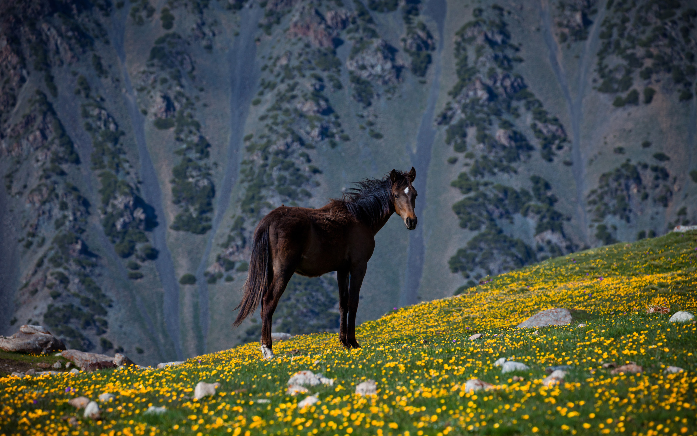
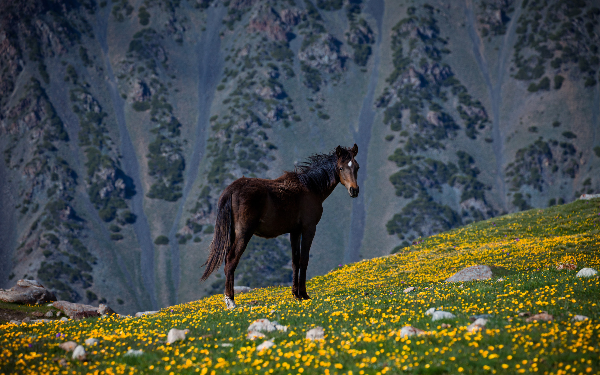

6Son - Kul
In the morning You will find yourself in a surprisingly beautiful place surrounded by mountains, pastures, and of course, see the lake itself . After Breakfast, free time until lunch. At this time, you can walk along the coast of the crystal — clear lake, swim in it. During lunch tasting of national drinks and dishes (koumiss, kurut, bozo, chak-chak and much more). After a hearty lunch, demonstration of national games such as Kok-Boru (goat Polo)-an ancient game of nomads, where horsemen fight over a goat carcass — it is necessary not only to possess it, but to hold and then throw into the «pot» (gate) of the opposing team ; and Kyz-Kuumai (pursuit of the girl). The game begins with the fact that the rider and his companion go to the racetrack. If the rider manages to catch up with the girl, he gets the right to hug and kiss her at a gallop. However, in the opposite direction, the participants start in a different order. Now the rider gets a head start, and the girl has to catch up with him. If it will succeed, it shall have the right to beat him with a whip. After a night in yurts. At night, this fabulous place is even better –a gorgeous night sky with all the constellations and stars that You will remember for a long time.
 
